My
puppy, Kobe. He is a
male Samoyed (pronounced
sam-a-yed). His hobbies are sleeping, peeing, pooping,
playing, chewing, ripping, stealing, barking, jumping, walking, pulling,
digging, etc. In other words, acting like a Samoyed. This is
my second Samoyed. One would have thought I would have learned my lesson
on being owned by a Samoyed, but noooooo! Subconsciously, I must be into
S&M. Actually, I wouldn't even think twice about owning another
breed. Samoyeds are the best! Yes, even better than Shelties. 
His current favorite thing to do is chewing up my pillow and comforters. Count so far is one pillow, three comforters (four if you count the guest bed), and two sofas. Grrr .... Apparently it is a little known fact that polyester fill is a supplementary diet requirement.
Name:
Kobe (pronounced ko-bay)
Birth Name: Gold Boy/Midas
AKC Name: WildWind's Starlite Bear
Nicknames: Kobi-wan, Obi Konobi (Star Wars), Kobie-Dobie, Hey you!, Bad Puppy!, and Butthead.
Birth Date: 18 May 2000
Birth Weight: 11 oz
Current Weight: 53.3
pounds as of 11 March 2005. Graphs: Overall
Year 1 2
3 4
5
Papa: Indy (Ch. Starlite's Bear in Mind)
Mama: Emmy (Ch. WildWind's Lil' Miss ShowOff)
Siblings: Peaches (WildWind's Starlite Belle), Molly (WildWind's
Silver Starlite), Luna (WildWind's Blue Starlite)
Likes: walks, car
rides, playing toss with stuff
animals, treats (especially turkey franks), chasing tennis balls, picking up every piece of garbage on the
ground, playing with the nephews, running through sprinklers and water
fountains, chewing up comforters, Cheetos, humping legs, crotch sniffing,
jumping fences.
Dislikes: being ignored, baths, grooming,
baths, teeth brushed, baths, nails clipped, baths. Oh, did I mention he really, really hates
baths?
Kobe? Where did that name come from? He is named after the Italian Iron Chef Kobe Masahiko. Iron Chef is a popular Japanese television cooking show which has a large following in the United States. Okay, why the Italian Iron Chef? Well, you didn't expect me to name him after the Chinese Iron Chef, Chen Kenichi? Or the French Iron Chef Sakai Hiroyuki? Or the Japanese Iron Chef Morimoto Masaharu? I didn't think so. The Iron Chef Compendium website is a good place to visit to learn more about the show.
Here are the latest movie (Windows Media format). Kobe Sings With Scooby, 17 December 2004, 838 kb
Kobe has his own Dogster site! Come visit him and his pals here.
Want to bring your dog to Fort Funston or Crissy Field/Presidio? Check out
this brochure published by the Golden Gate National Park Recreation Area, Enjoying
the Park with your Dog. The brochure provides the rules and which
parks within the Golden Gate NPRA dogs are allowed. Santa Clara County
Parks also provides a webpage on Places
to Take Your Dog. For San Mateo county parks, no pets are allowed in
any county park.
Here are some of my favorite pictures. Click on each for a larger picture.
 Cute ... |
 Not so cute! |
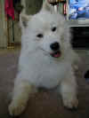 Ruh-Roh! |
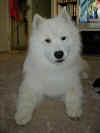 |
 |
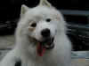 Can you say "Happy!"? |
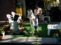 Everybody jump for bubbles! |
 What dogs do ... |
 Help! I'm being held hostage! |
 A sleeping pup is a good thing! |
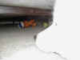 Keeping a watchful eye on his toys. |
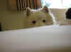 Peek-a-Boo! |
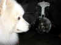 Everybody is a critic. Kobe inspecting. |
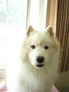 Hole in the window screen? What hole? |
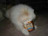 I scream, you scream, we all scream for ice cream! |
 |
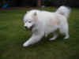 Faster than a speeding bullet. |
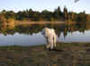 Vasona Lake |
{kind=link}